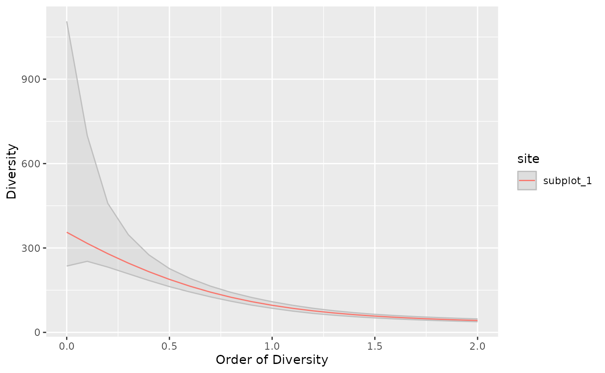

Computer-intensive tasks can be run in parallel thanks to the future and doFuture (Bengtsson 2021) packages.
The following functions are concerned:
Progress bar
These functions can report their progress thanks to the progressr package.
The progress bar must be activated and its interface chosen. Since all progress bars rely on package cli in divent, the “cli” handler is a good choice.
library("progressr")
handlers("cli", global = TRUE)Example
The diversity profile of example data is computed sequentially. The computing time is measured.
library("divent")
system.time(
the_profile <- profile_hill(paracou_6_abd[1,], n_simulations = 100)
)## user system elapsed
## 11.528 0.017 11.545
autoplot(the_profile)
Parallel plan
It can be parallelized by setting a hardware strategy. The following example launches several simultaneous copies of R on the local computer: it works on all operating systems. The number of parallel processes here is the number of logical CPUs.
library("future")
plan(multisession, workers = availableCores())The same computation is now run faster.
system.time(
the_profile <- profile_hill(paracou_6_abd[1,], n_simulations = 100)
)## user system elapsed
## 0.675 0.008 7.281The default strategy is sequential. It should be
restored.
plan(sequential)Other possible strategies are forking (multicore),
unavailable on Windows, and cluster, on several
computers.
See the documentation of the future package, namely
future::plan().
Limits
Setting up the parallel code and gathering the results takes time so the performance of sequential simulations may be better if they are fast.